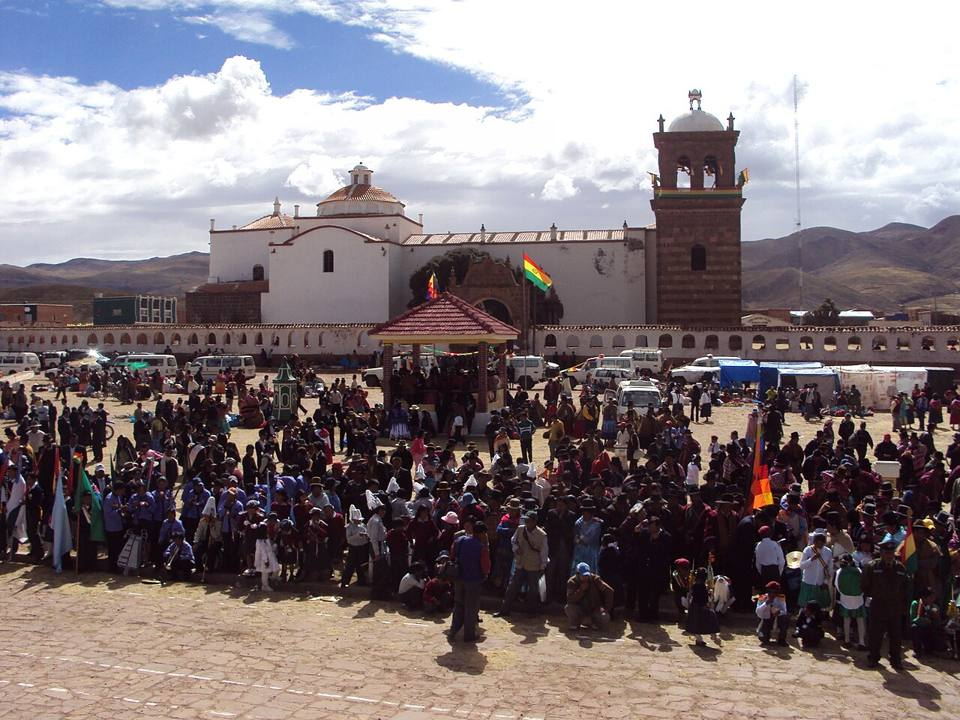
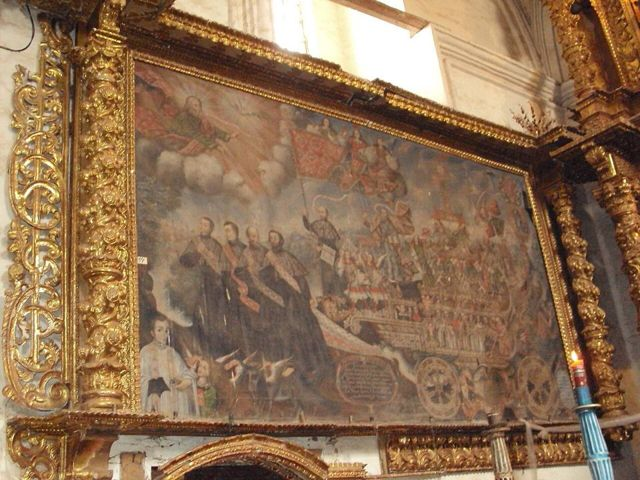
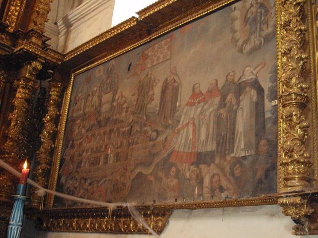
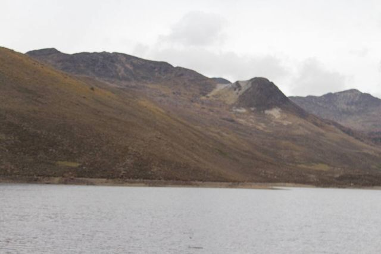
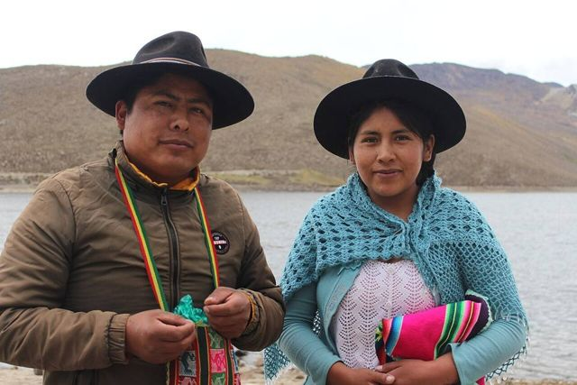
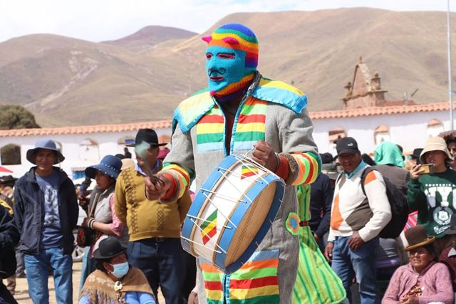

Jesús de Machaca
Département de La Paz · Culture et histoire

Jesús de Machaca est un village aymara de l'Altiplano, organisé en ayllus, les communautés traditionnelles. Son église de 1706, avec sa façade sculptée et son grand portail, est l'une des belles églises coloniales de la région. Un village où la vie andine suit encore le rythme des saisons.
3 850 maltitude
0 à 1 joursur place
Haute altitude. Au-dessus de 3 500 m, le mal des montagnes (soroche) est fréquent. Arrivez progressivement, buvez beaucoup et ralentissez le premier jour.
À faire
- Église coloniale de 1706
- Vie des ayllus aymaras
- Excursion vers les Urus d'Iruito
À goûter
- ChuñoPommes de terre gelées puis séchées au soleil, une technique andine millénaire. Goût surprenant, à tester au moins une fois.
- Sajta de polloPoulet en sauce jaune au piment amarillo, avec chuño et pomme de terre. Typique de l'Altiplano.
Conseil. Bus depuis El Alto (environ 3 h, par Viacha). Hébergement très simple.
Comment aller à Jesús de Machaca
Photos de Jesús de Machaca










Autres lieux de la région
 La PazLe siège du gouvernement le plus haut du monde, dans une cuvette au pied de l'Illimani.
La PazLe siège du gouvernement le plus haut du monde, dans une cuvette au pied de l'Illimani. El AltoLa grande ville aymara sur l'Altiplano, juste au-dessus de La Paz : marché géant, cholets et catch des cholitas.
El AltoLa grande ville aymara sur l'Altiplano, juste au-dessus de La Paz : marché géant, cholets et catch des cholitas. Valle de la LunaFormations d'argile lunaires dans la banlieue sud de La Paz.
Valle de la LunaFormations d'argile lunaires dans la banlieue sud de La Paz. Valle de las ÁnimasUne forêt d'aiguilles de terre au bord de La Paz, plus grande et plus sauvage que la Vallée de la Lune.
Valle de las ÁnimasUne forêt d'aiguilles de terre au bord de La Paz, plus grande et plus sauvage que la Vallée de la Lune. ChacaltayaAncienne station de ski à 5 400 m : la plus haute vue de la Cordillère Royale.
ChacaltayaAncienne station de ski à 5 400 m : la plus haute vue de la Cordillère Royale. Huayna PotosíUn « 6 000 » réputé accessible, ascension guidée en 2 ou 3 jours.
Huayna PotosíUn « 6 000 » réputé accessible, ascension guidée en 2 ou 3 jours. Cordillère Royale : CondoririLagunes glaciaires et sommets enneigés, à 2 h de La Paz.
Cordillère Royale : CondoririLagunes glaciaires et sommets enneigés, à 2 h de La Paz. TiwanakuSite préinca classé UNESCO : Porte du Soleil, temple de Kalasasaya.
TiwanakuSite préinca classé UNESCO : Porte du Soleil, temple de Kalasasaya.- Uros d'IruitoUne communauté uru au bord du río Desaguadero, gardienne d'une très ancienne culture du lac.
 Comanche et ses Puya raimondiiUne forêt de Puya raimondii, la plus grande broméliacée du monde, sur l'Altiplano.
Comanche et ses Puya raimondiiUne forêt de Puya raimondii, la plus grande broméliacée du monde, sur l'Altiplano.- Sources chaudes de ViscachaniBains d'eau tiède sur l'Altiplano, sur la route d'Oruro, à environ 1 h 30 de La Paz.
 SorataVillage tranquille au pied de l'Illampu, base de treks.
SorataVillage tranquille au pied de l'Illampu, base de treks. Charazani et l'ApolobambaLe pays des Kallawayas, guérisseurs andins (UNESCO), avec sources chaudes et grands treks.
Charazani et l'ApolobambaLe pays des Kallawayas, guérisseurs andins (UNESCO), avec sources chaudes et grands treks. Route de la Mort (vélo)La descente en VTT la plus célèbre du monde : de 4 650 m à 1 200 m en une journée.
Route de la Mort (vélo)La descente en VTT la plus célèbre du monde : de 4 650 m à 1 200 m en une journée. Trek du Choro (chemin inca)Trois jours de marche sur un chemin préhispanique, des neiges de La Cumbre à la forêt des Yungas.
Trek du Choro (chemin inca)Trois jours de marche sur un chemin préhispanique, des neiges de La Cumbre à la forêt des Yungas. Trek du Takesi (chemin inca)Deux jours sur l'un des chemins incas les mieux conservés de Bolivie, jusqu'à Yanacachi.
Trek du Takesi (chemin inca)Deux jours sur l'un des chemins incas les mieux conservés de Bolivie, jusqu'à Yanacachi. Trek de la Yunga CruzLe plus sauvage des chemins préhispaniques vers les Yungas : 4 à 5 jours au pied de l'Illimani.
Trek de la Yunga CruzLe plus sauvage des chemins préhispaniques vers les Yungas : 4 à 5 jours au pied de l'Illimani. Coroico (Yungas)Village perché dans les Yungas subtropicales : cafés, cascades, piscine avec vue.
Coroico (Yungas)Village perché dans les Yungas subtropicales : cafés, cascades, piscine avec vue. Chulumani (Sud Yungas)Petite ville des Yungas du Sud, entre café, coca et forêts de nuages, loin de la foule.
Chulumani (Sud Yungas)Petite ville des Yungas du Sud, entre café, coca et forêts de nuages, loin de la foule.